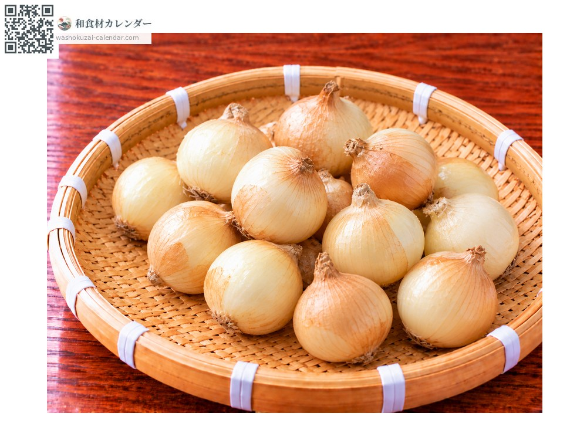
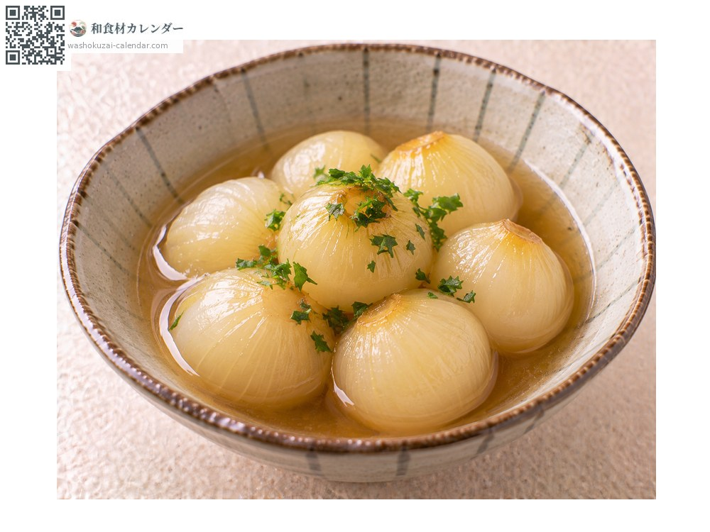
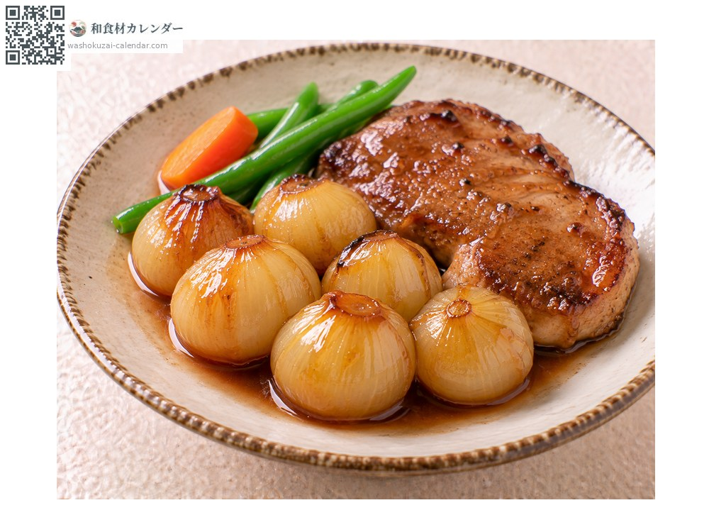
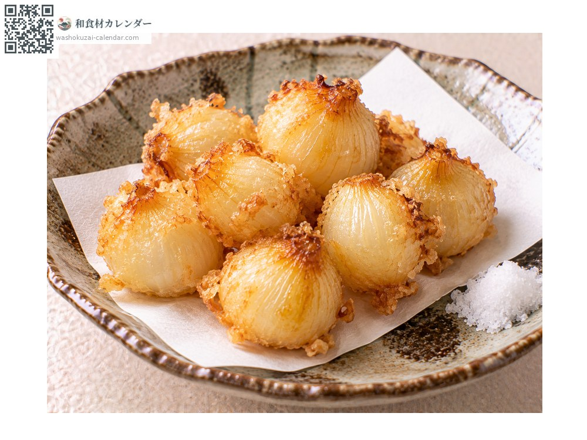
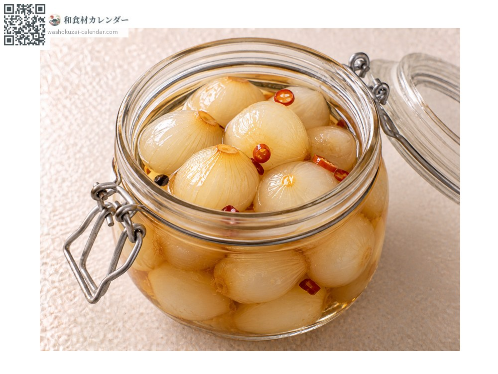

Pearl onion
ペコロス ぺころす pekorosu
Also known aspekorosu
At its best in Apr, May

When it is at its best
In seasonAvailable
How to cook

Simmered whole
Peeled and simmered whole, which brings out the sweetness.

Glazed
Cooked with butter and sugar until glossy, as an accompaniment to meat.

Deep-fried plain
Fried whole; fragrant outside and meltingly soft within.

Pickles
Pickled in sweetened vinegar, where the round shape is part of the charm.
How to choose
Glossy skin that is properly dry, and heavy in the hand.
Storage
Store somewhere cool, dark and airy. Once peeled, refrigerate and use soon.
Main areas
Good to know
A small onion of three or four centimetres across. It is not a small variety but an ordinary onion grown close-planted so that it stays small. Usable whole, it suits braises and garnishes, and turns remarkably sweet with cooking.